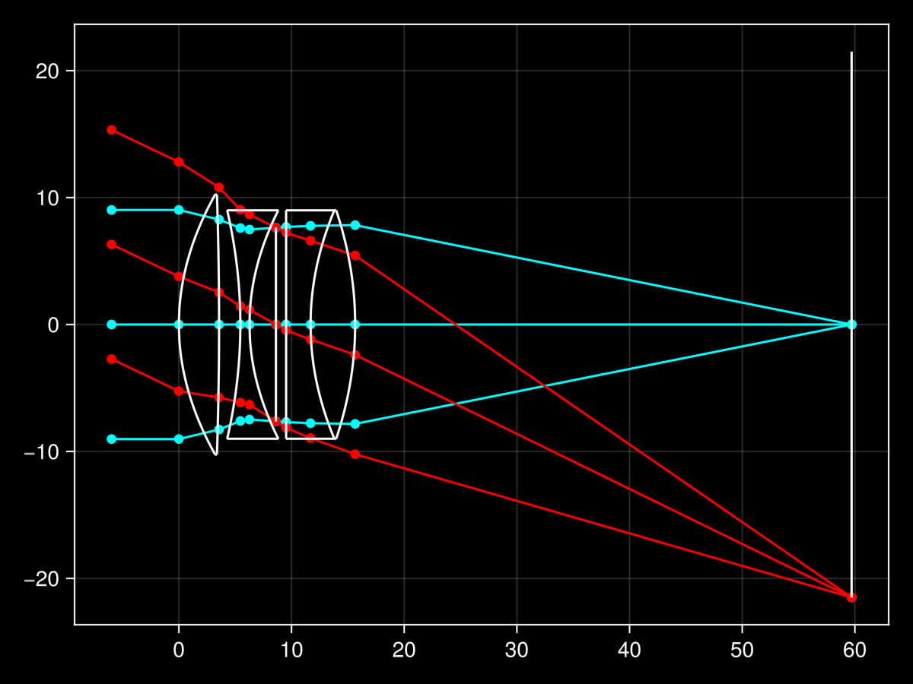
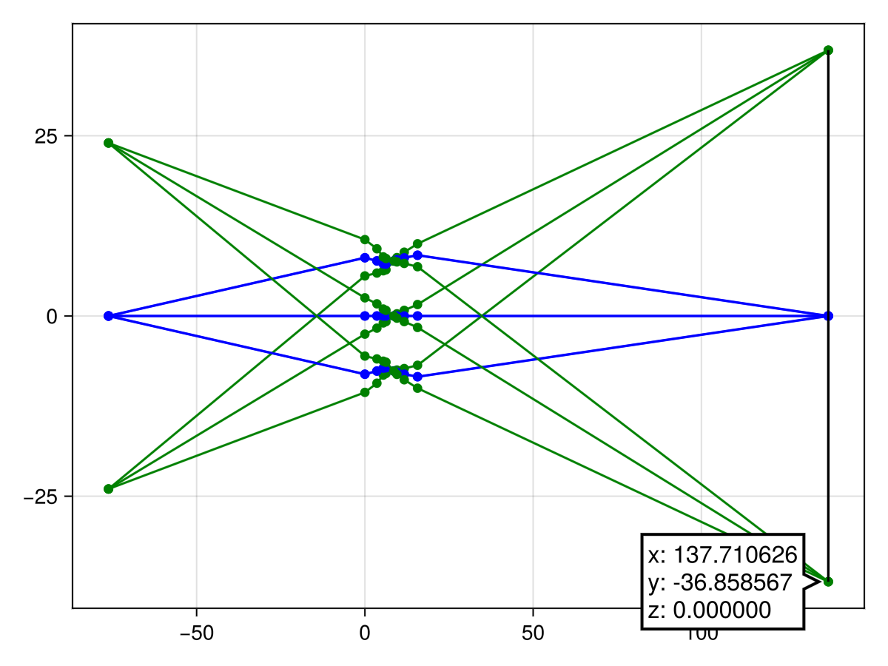
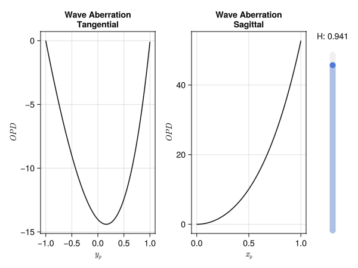
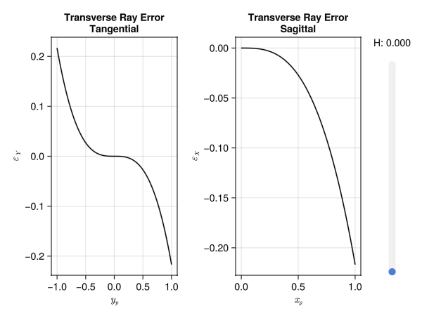
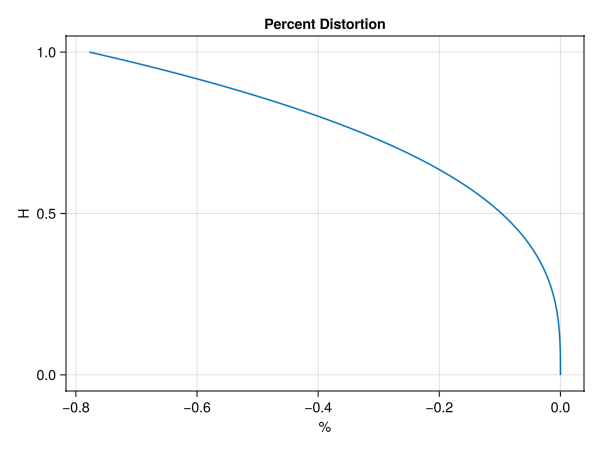
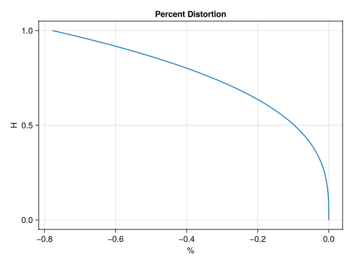

Plotting Examples
Plotting is supported with the installation of any Makie backend.
Ray Trace Plots
Supported keyword arguments are:
theme(using Makie's theme customizability);ray_colors(a two-tuple of the marginal & chief ray colors);surface_color(for the optical element surfaces & image plane);- anything Makie's
linesaccepts.
Using the mutating rayplot! version will draw on top of the current figure.
using GLMakie
theme = theme_black()
surface_color = :white
ray_colors = (:cyan, :red)
rayplot(surfaces, system; theme, surface_color, ray_colors)
rays = raytrace(system, -24.0, -1.5 * system.f)
fig = rayplot(rays)
rays = raytrace(system, 24.0, -1.5 * system.f)
rayplot!(rays) 
Aberration Plots
The fan plots are interactive and include a slider which allows dynamic adjustment of the field.
using GLMakie
wavefan(W)
rayfan(W, system)
field_curves(W, system)
percent_distortion(W, system)
spot_size(W, system)   
